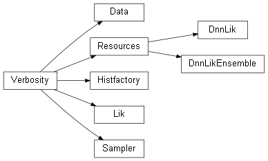

DNNLikelihood
0.0.1
Introduction
Installation
Python module
Summary
Classes
Inheritance diagram
The Histfactory object
The Likelihood object
The Sampler object
The Data object
The DNNLikelihood object
The DnnLikEnsemble object
Resources management
Inference functions
Useful functions
Notes on corner.py
Notes on plots
Verbosity mode
Use and Citation
Indices
DNNLikelihood
»
Python module
»
Summary
View page source
Summary
¶
Classes
¶
Class
Short description
DnnLik
DnnLikEnsemble
Data
Histfactory
Lik
Resources
Sampler
Verbosity
Inheritance diagram
¶
